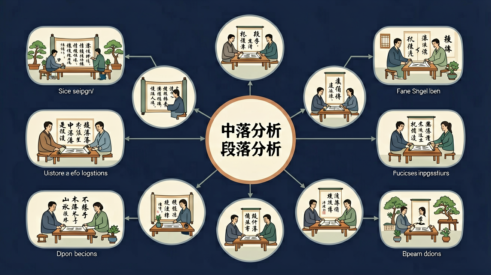

🤖 AI 多模态互动区
把你的问题告诉 AI，或上传图片让 AI 帮你分析
请粘贴一段文字，AI将帮你找出中心句并用一句话概括段落大意
点击复制此提示词 →
📎
点击或拖拽图片到这里

🎯 能说出段落三要素（中心句、支撑句、过渡句）
🎯 能判断段落结构类型（总分/分总/并列）
🎯 能分析段落逻辑关系（因果/转折/递进）
❓ 为什么段落分析能帮我写作文？
❓ 找中心句为啥总跑偏？
❓ 过渡句到底藏在哪？
学完这一课，这些问题你都能自信地回答。
测一测，帮助我们了解你的基础（不计入成绩）
题1：一段话的中心句一定在第一句吗？
题2：概括段意时，以下哪种方式最好？
💡 无论答对答错，继续学习都会有收获！
And：学生已掌握基础句子成分分析
But：但面对长段落时难以抓住层次关系
Therefore：本模块教你用'结构树'拆解段落骨架
段落像大树有主干和分枝。例如《春》中'桃树、杏树、梨树（主干），你不让我我不让你（分枝1），都开满了花赶趟儿（分枝2）'，3个分句围绕'春花争艳'展开。统计显示中考记叙文段落平均含1个中心句+2.8个支撑句。
🌍 就像刷短视频时，标题是中心句（比如'三招搞定蛋炒饭'），步骤演示就是支撑句。妈妈唠叨'快写作业'时，后面跟的5条理由都是支撑句。
分析段落：'①校园的早晨最美。②玉兰树缀满露珠（√），③食堂飘来包子香（×），④操场有同学晨跑（√）'，哪个支撑句偏离主题？
你已经能读懂单个句子的意思
面对整个段落时，不知道怎么找中心句，概括段意时总是直接抄原文
今天学习找中心句的三个位置（段首/段末/段中）和用自己的话概括段意的方法
分析杂乱日记： 『3月1日下雨 3月5日种子发芽 3月3日播种』
像拆乐高一样分解句子功能
中心句是段落GPS，其他句子是导航路线
对比总分式（先亮观点）和分总式（最后总结）
用荧光笔标出逻辑连接词（但是、所以、例如）
把课文结构用到周记里
先独立作答，再点选项查看对错与错因。
哪个段落顺序最合理？ ①浇水施肥 ②播种种子 ③观察发芽 ④收获果实
下面哪组过渡词最适合填入横线？ 『菜苗长出了新叶子。____，我们发现叶子上有虫洞。』
哪个句子破坏了段落主题？ 段落主题：记录向日葵生长 ①茎秆每天长高1厘米 ②今天数学课学了乘法 ③黄色花瓣渐渐展开
把句子组合成段：____。 ①先松土挖坑 ②最后浇水定根 ③然后放入树苗 ④再填土压实
答案：①③④②
按植树步骤排序
补全段落中心句：____。王丽负责浇水，张明记录生长，我每天除草。
答案：我们分工照顾菜园
概括后续具体分工
和前测对比，看看你进步了多少！
题1：「秋天真美啊！金黄的叶子铺满了大地，空气中弥漫着果实的香甜，小松鼠忙着收集过冬的食物。」这段的中心句是？
题2：上段的段意，以下哪个概括最好？
❌ 常见错误
做题时只找第一句当中心句
✅ 正确做法
中心句可能在段首（总分结构）、段末（分总结构）或段中
🩺 错因诊断：找中心句：①读完全段②找能概括全段意思的句子③验证：其他句子是否都在说明这句话
✅ 中心句可能简短（如'春天真美'）
💡 混淆了句子长度和重要性
✅ 关注'其实、相反'等隐性连接词
💡 只记显性过渡词（但是、所以）
💡 类比记忆：把今天的知识和你已经知道的事物联系起来，记得更牢！
把你的问题告诉 AI，或上传图片让 AI 帮你分析
点击或拖拽图片到这里
回忆：今天学了哪些关键词和规则？试着说出来。
用自己的话解释今天学的核心概念，不看书能说清楚吗？
用今天的知识解决一个实际问题，或写一个新例子。
把今天的知识与已有知识联系起来：有什么共同点？有什么区别？能不能自己创造一道新题？